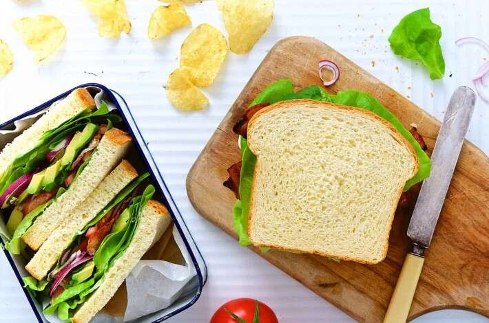

King Arthur's Classic White Sandwich Bread

Description
(copied from https://www.kingarthurbaking.com/recipes/king-arthurs-classic-white-sandwich-bread-recipe.)
This close-grained, nicely sliceable white sandwich loaf is the
perfect "go-to" bread for breakfast toast, brown-bag PB & Js, or a
grilled-cheese-and-soup supper.
Ingredients
- 1 ¼ cups (284g) to 1 ½ cups (340g) lukewarm water*
- 1 heaping tablespoon (32g) honey
- 2 ¼ teaspoons instant yeast
- 1 ¾ teaspoons (11g) salt
- 2 tablespoons (28g) butter, softened
- 4 cups (480g) King Arthur Unbleached All-Purpose Flour
- ⅓ cup (37g) King Arthur Baker's Special Dry Milk or nonfat dry milk
Steps
- Weigh your flour; or measure it by gently spooning it into a
cup, then sweeping off any excess. Mix all of the ingredients
in the order listed, and mix and knead ‐ by hand, or using a
stand mixer ‐ to make a smooth dough. It won't be particularly
soft nor stiff; it should be smooth and feel bouncy and elastic
under your hands.
- Place the dough in a lightly greased bowl, or large (8-cup)
measuring cup. Cover it, and let it rise for 60 to 90 minutes,
till it's become quite puffy, though not necessarily doubled in
size.
- Gently deflate the dough, and shape it into a fat 9" log.
Place it in a lightly greased 9" x 5" or 10" x
5" loaf pan.
- Cover the pan, and let the dough rise for 60 to 90 minutes,
till it's crowned 1" to 1 1/2" over the rim of the
pan. Towards the end of the rising time, preheat the oven to
350℉.
- Bake the bread for 20 minutes. Tent it lightly with aluminum
foil, and bake for an additional 15 to 20 minutes, till it's
golden brown. An instant-read thermometer inserted into the
center will read 195℉ to 200℉.
- Remove the bread from the oven, and turn it out onto a rack to
cool. When completely cool, wrap in plastic, and store at room
temperature.
⌂ Odin Recipes